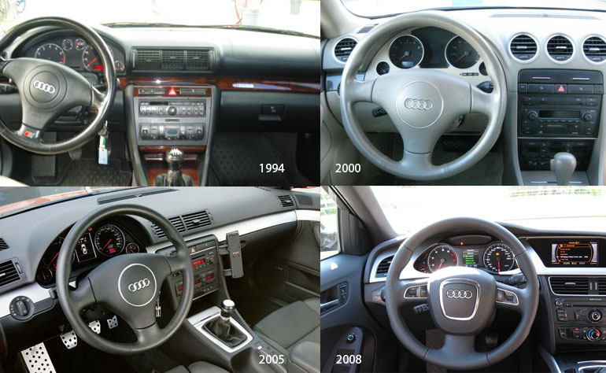
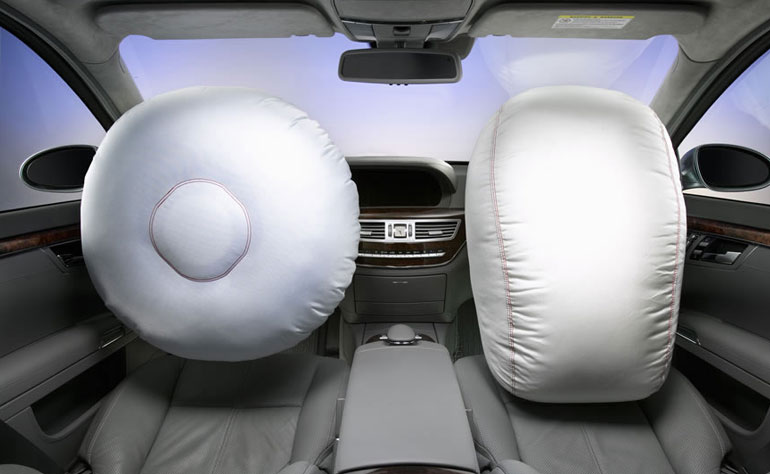
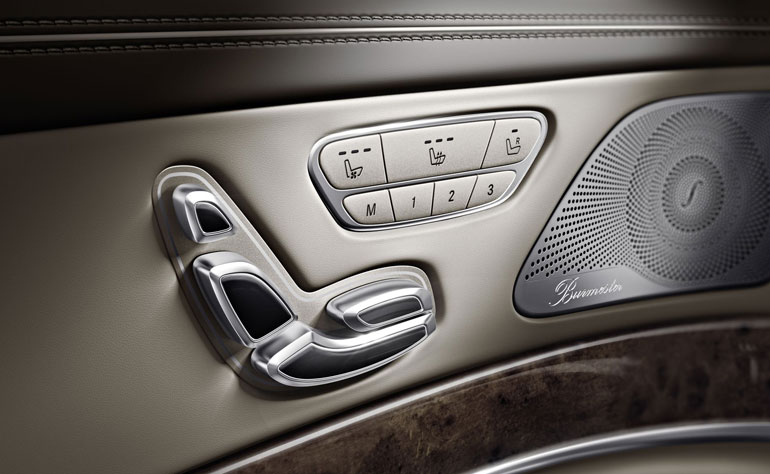

Clip User Experience
User Experience Design
Richie Taylor | UX Manager
Who am I?
Car Enthusiast, Maker, Thinker, Quantified selfer, and Cryptocurrency evangelist, who has been working as a professional designer for 18 years, with 14 years of that being User Experience Design.
- PayClip, September 2017 - Current | UX Manager
- nThrive Analytics, Feb-2017 - September 2017 | UX Manager
- Electronic Arts, 2014-2017 | Lead UX / Product Manager / Producer
- Ellucian, 2013-2014 | Lead UX
- Out of Bounds Creative, 2005-2013 | Director of User Experience
- Chapelle ltd | Visual Designer (Book Design)
- Nichols Inc | Visual Designer (Large Format)
What is User Experience Design?
- User Experience - a person’s behaviors, attitudes and emotions about using a particular product, system or service.
- Design - to create, fashion, execute, or construct according to plan.
An empathetic advocate for the user.
Elements of User Experience Design
UX? they do wireframes, right? 
| What UX consists of | How UX is seen |
|---|---|
|
|
Disciplines of a UX Professional
| Name | Abbrevation | Meaning |
|---|---|---|
| User Experience | UX | How the user thinks and feels |
| Information Architecture | IA | How the overall system is organized |
| Visual Design | VxD | How the system looks |
| User Interface Design | UI | Aesthetic, and how the screen is organized |
| Interaction Design | IxD | How the user and device act and react |
| Information Design | ID | How the information on a screen is organized |
| Data Visualization | DataViz | How the data is visually represented |
| Content Strategy | CS | How the content is organized and read |
| UX Researcher | UXR | User research focuses on understanding user behaviors, needs, and motivations. |
Clip Design, Pillars of UX

- User Familiarity
- Consistency
- Affordance
- Protection
- Accessibility
User Familiarity
Follow real-world conventions, making information appear in a natural and logical order.

- Use words, phrases, and concepts familiar to the user, rather than system-oriented terms (jargon)
- Leverage real-world conventions, making information appear in natural and logical order
- Use controls that are well understood (HIG, Material)
Don't reinvent the wheel
Consistency
Maintaining consistency in patterns, will insure that our users are able to transition seamlessly from product to product without playing mental gymnastics.
- Labeling and location of calls-to-action
- Nomenclature (Cargar, Cobrar, Aceptar Pago)
- Palette
- Design Patterns
Consistency is the foundation of trust
Affordance
Affordance is the concept that an object or element projects the possibility of an action.

- Buttons, look like buttons
- Hyperlinks, are underlined, indicating they're interactive.
- The system should always keep users informed about what is going on spinners and progres bars
The brain views the world in terms of utility
Protection
We need to protect our users from making irrecoverable, or time consuming mistakes.
- Confirmation when deleting
- Are you sure you want to...
- You are about to...
$@#&!
Accessibility
Design for the diverse set of users who will interact with your products.
- Visual - colorblindess, low vision, blindness
- Hearing - Deafness and hard of hearing
- Motor - inability to use a mouse, slow response time, limited fine motor control
- Cognitive - learning disabilities, distractibility, inability to focus on large amounts of information
Access for everyone regardless of disabilities
UX Process
- Strategy
- Research/Discovery
- Analysis
- Design
- Production
- Launch
Strategy
- What are we hoping to achieve?
- How does it fit with Clip's long-term vision?
- How will success be measured?
- What is priority?
Research/Discovery
- Competitive Analysis
- Analytics Review
- Stakeholder Interviews
- Contextual Inquiry
- Surveys
Analysis
- Heuristic Review
- User Testing
- Use Case Identification
- Storyboards
- Persona Identification
Iterate on definition after organizing
Design
Build a feedback loop based to validate assumptions
- Paper Prototypes
- Interactive Wireframes
- Flow Charts
- Invision Prototypes
- (Wireframes) Low Fidelity Focus
Production
- Collaboration with Developers
- Creation of Design Spec
- High Fidelity Design
- Invision Prototype (high fidelity)
- Usability Testing(high fidelity)
Iterate.
Launch
- GTM Strategy
- Controlled or Beta Release
- Messaging to internal stakeholders
- Messaging to customers
- Monitor KPIs
- Monitor Telemetry
- Usabilitiy Testing (Production)
- Iteration Proposals
Test, Test, Test... Iterate
Break?
Discussion...
Who has worked with a dedicated UX Team?
- What did the team look like?
- What worked?
- What didn't work?
Areas of responsibility?
- What did UX own?
- What did Product Management own?